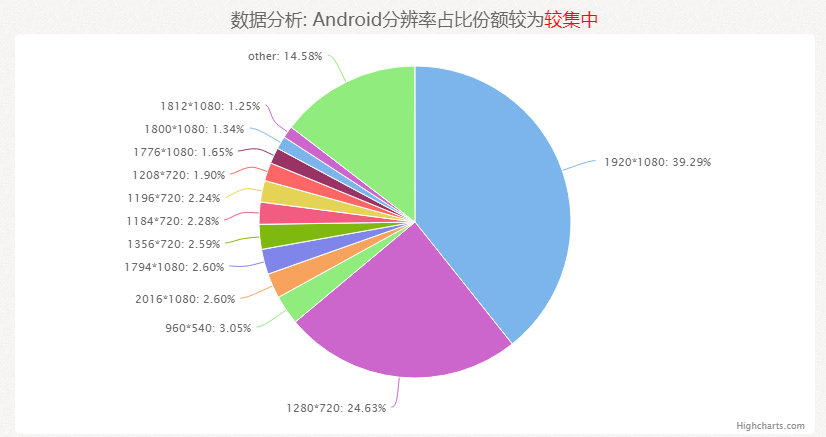
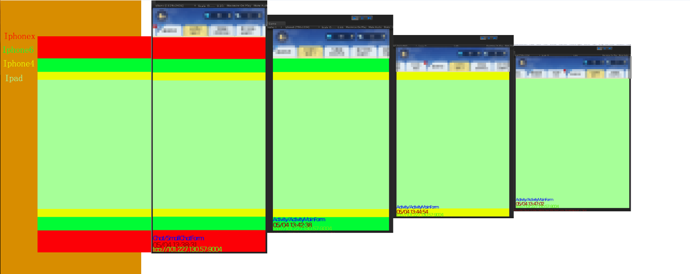
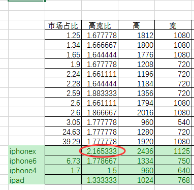
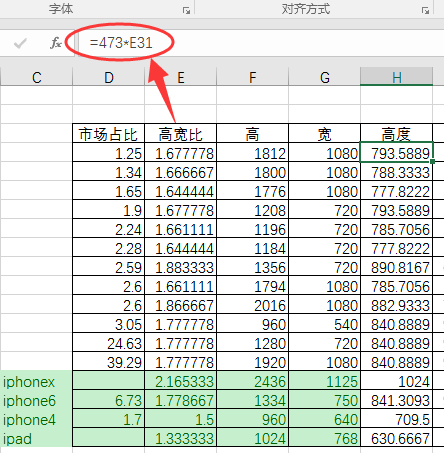
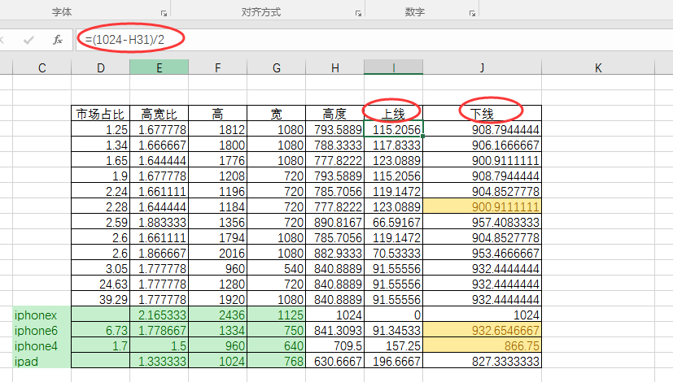
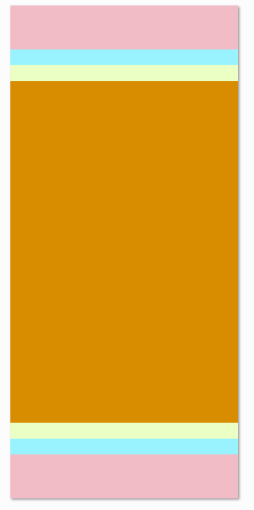
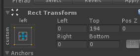
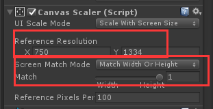
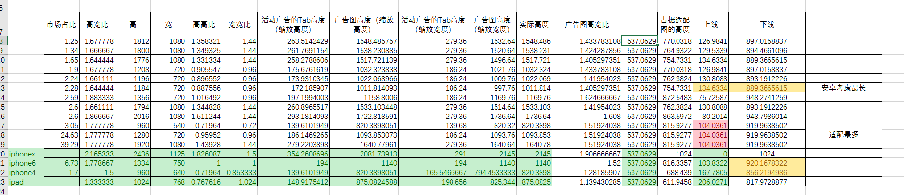
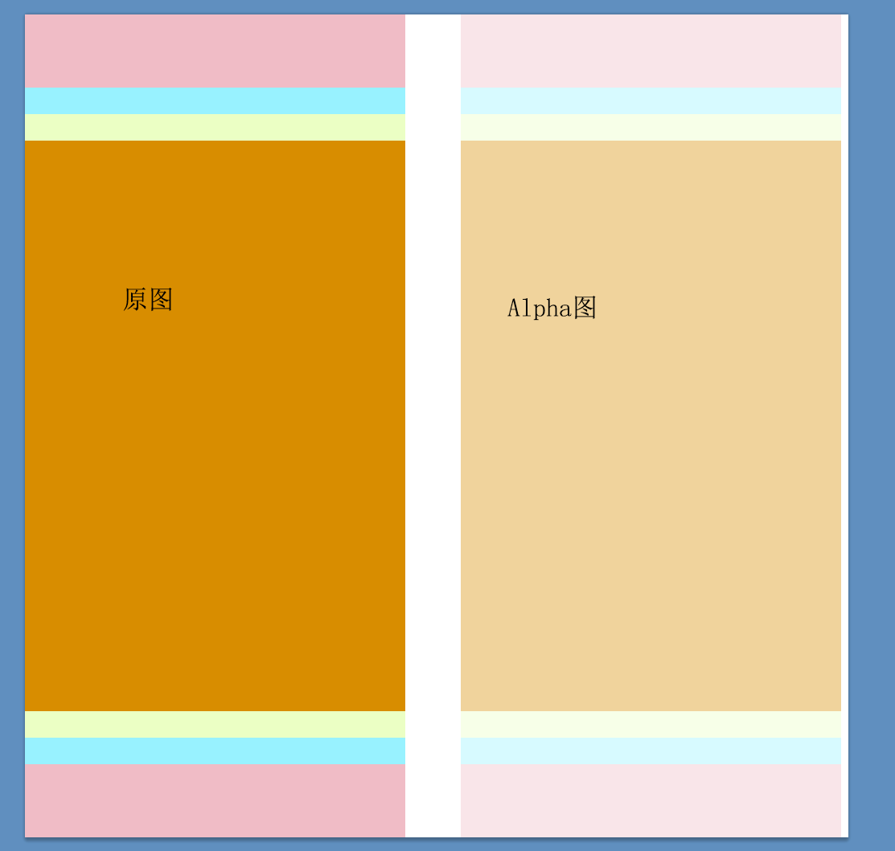

@(Gwgo学习笔记)
[toc]

http://nb.oa.com/AdaptionData/index/
出图是出iphonex的图，全屏图是473*1024

（1）如果我们考虑最长的屏幕是iphonex 确定好以这个来出图 其他的手机屏幕去适配这个的是会只会可能被拆检上下的区域

（2）把24361125 等比例缩放成 1024473（有0.1的细微拉升 基本无感知）
（3）把其他屏幕换算,
等比拉升：deviceH/deviceW = deviceHScale/473
所以deviceHScale = 设备高宽比*473

（4）算出上限 下限

（5）选线，告诉美术这些线的意义：
总结，美术要考虑第一条线（iphone6）来出图 因为这是大部分机的尺寸，然后去重要内容（文字）要放在第二条线以内，第三条线可以不考虑那么多。

了解个概念：matchWidthOrHeight
等于1的时候：缩放宽度
等于0的时候：缩放高度
我们只有0、1情况


代码中会动态改变这个值 所以换算公式也需要
if (Screen.width / this.m_canvasScaler.referenceResolution.x > Screen.height / this.m_canvasScaler.referenceResolution.y)
{
this.m_canvasScaler.matchWidthOrHeight = 1.0f;
}
else
{
this.m_canvasScaler.matchWidthOrHeight = 0f;
}

（1）算出在设备里面的广告图高度
（2）类似全屏图计算
后续如果为了省内存或者是省流量
pvr就可以做成这样，左边是原图右边是Alpha通道
pvr右侧取得是r g b其中一个值
除了广告图可以左右拆分alpha 其他图集也是可以这样做的。

（1）代码中是把www.bytes转RGBA32 存储宽高信息
需要知道 原来的宽高 全屏则是473*1024
（2）分平台下载 etc pvr
（3）修改材质 shader 需要修改uv
（4）给美术使用的转图工具
（5）给策划使用的上传工具